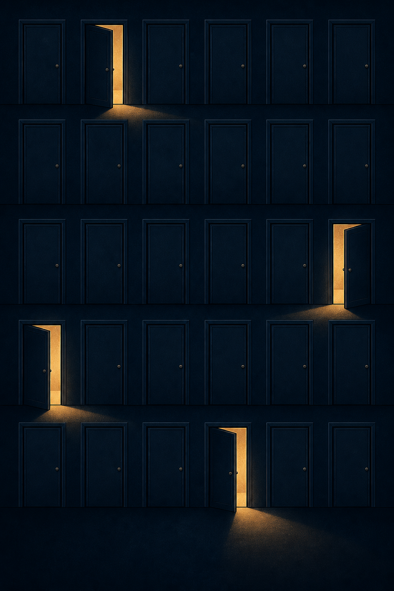

Навык для Qwen Coder CLI: читает логи любого формата, находит корневую причину и показывает улику — файл и строку.
Ни одного парсера под формат. Установка — одна команда cp, настраивать нечего.
Чистое окружение. Одна команда cp.
Вопрос обычными словами — и другой ответ.
Аккуратная сводка: 520 неудачных попыток, 85 BREAK-IN ATTEMPT, топ атакующих IP
И ни слова про успешный вход. Всё посчитано верно — и главное пропущено: атакующий уже внутри.
Accepted password for fztu from 119.137.62.142
Сессия 13 минут, вердикт — компрометация. Атакующий всё это время был внутри
Разница между этими двумя ответами — одна скопированная папка. Это и есть требование R1: инженер, который впервые слышит о проекте, получает пользу с первой попытки — без единой настройки.
Логи есть у всех.
Прочитать их может эксперт — и только он.
Ни один парсер не покрывает этот список целиком — и завтра в нём появится ещё один формат, которого никто не предвидел.
Первая мысль — написать парсеры и правила под каждый формат.
Мы её проверили. На собственном коде.
Инференс формата не сходится никогда — на самом частом формате логов в Linux. Список исправлений открытый: BSD syslog, Android logcat 03-17, Proxifier 10.30, …
Модель уже умеет читать любой формат.
Парсер ей не нужен.
Код больше не пытается понимать строку лога. Он только достаёт байты и проверяет цитаты.

Ограничение — не формат и не окно контекста.
А то, какие файлы агент открыл.
после 5-го шага
Дисциплина покрытия. Агент ведёт список всех файлов и закрывает каждый явно: «посмотрел, нашёл вот это» / «к делу не относится, потому что…» / «не смотрел, и вот почему это безопасно». Остался файл без пометки — расследование не закончено.
Та же модель, тот же промпт.
Единственная переменная — навык.
| арм | ссылок файл:строка | объём отчёта, симв. | шагов агента | время, с | прогонов |
|---|---|---|---|---|---|
| без навыка (baseline)none | 17 | 4 778 | 14,7 | 218 | 3 / 5 |
| Sherlock v1v1 | 52 | 7 369 | 10,2 | 110 | 4 / 5 |
| Sherlock v2v2 | 94 | 9 176 | 9,3 | 94 | 3 / 5 |
| Sherlock v3v3 | 44 | 7 430 | 18,4 | 248 | 5 / 5 |
Модель [SP]deepseek-v4-flash, датасетов: 5. Средние — по состоявшимся прогонам; 5 не состоявшихся исключены и перечислены в приложении. Промпт во всех армах побайтно одинаковый, единственная переменная — навык.
649 МБ, 26 форматов, 11 подброшенных дефектов, 2 ложных следа и ключ ответов. Генератор детерминирован (seed 20260728) — корпус воспроизводится побайтно.
Настоящий Qwen Coder CLI в headless-режиме, изолированный QWEN_HOME, одинаковый промпт. Каждый прогон — строка в append-only реестре.
Другая модель (gpt-5.5) сверяет отчёт с ключом ответов. Решение никогда не оценивает само себя.
Новый источник логов не трогает ядро.
Всё, что ниже по потоку, видит только локальный каталог. Поэтому добавление источника — это одна функция, а не правка ядра.
Приложение
Методика замера, известные ограничения, состав корпуса, что мы сознательно не строили, поведение на масштабе и дорожная карта.
Как именно измерено
Первая версия run.sh запускала baseline с флагом --safe-mode. В Qwen 0.21 он заодно запрещает чтение файлов вне рабочего каталога, поэтому baseline отвечал «нет доступа к каталогу» вместо анализа — то есть измерял песочницу, а не отсутствие навыка. Флаг снят, армы уравнены, baseline перезапущен. Старые строки остались в реестре и видны как несостоявшиеся прогоны.
Перенос показателей с первой модели на вторую не подтверждён — это главный открытый риск, и он записан в спецификации, а не спрятан.
Каждый прогон реестра, включая провалившиеся
| датасет | без навыка (baseline) | Sherlock v1 | Sherlock v2 | Sherlock v3 |
|---|---|---|---|---|
| Linux | 0без ссылок | 66ок | 37ок | 85ок |
| OpenSSH | 35ок | 50ок | 15ок | 23ок |
| Proxifier | 0не состоялся | 94ок | 231ок | 75ок |
| nginx | 16ок | 0не состоялся | 0не состоялся | 36ок |
| postgres-gz | 0не состоялся | 0без ссылок | 0не состоялся | 0без ссылок |
Крупное число — сколько ссылок файл:строка оказалось в отчёте. Прогоны, помеченные «не состоялся», остаются в реестре и видны здесь, но не попадают в средние на слайде 7.
Прогон v1: 17 шагов, 503 с, 2,6 млн входных токенов, ответ 181 символ. Один из субагентов упал с ошибкой провайдера — вместо отчёта осталась фраза «анализ уже завершён выше». Причина не в чтении логов, а в отсутствии защиты от падения субагента. Лечение: не делегировать финальный отчёт, повторять шаг при ошибке.
выигрыш
Корпус построен так, чтобы ломать наивный разбор
Сценарий: релиз каталога в 11:00 добавляет неиндексированный JSONB-поиск; в 12:59 несанкционированный сброс кэша убирает то, что это прятало; в 13:10 блокировки в Postgres выедают пул соединений; в 13:31 ручное уменьшение реплик вдвое; в 13:40 OOMKill и 503 до 14:22. Параллельно — тихая потеря 2867 уведомлений из-за смены retention.ms.
Каждый отказ — это результат замера, а не вкусовщина
цитат
под формат
правил
по id
саммари
PII
Пол качества задаёт процедура, потолок — модель
| стратегия поиска | качество | токенов | $/кейс |
|---|---|---|---|
| сырые логи целиком | 0,353 | 275 тыс. | — |
| tail-200, без разбора | 0,614 | 6,1 тыс. | 0,012 |
| сужение через grep | 0,639 | 88 тыс. | 0,129 |
| гибрид grep → tail | 0,670 | 19,8 тыс. | 0,031 |
| map-reduce саммари | 0,664 | 537 тыс. | 0,184 |
Самая примитивная стратегия набирает 0,614 из 0,670. Сложность покупает +0,056 — и вся она не в разборе формата, а в порядке действий.
649 МБ / 31 файл / 26 форматов, [SP]deepseek-v4-flash, один и тот же вопрос; отличие — только наличие навыка:
| арм | отчёт дошёл | файлов | токенов |
|---|---|---|---|
| без навыка | нет · 157 симв. | 0/30 | 3,63 млн |
| навык v1 | нет · 106 симв. | 0/30 | 5,73 млн |
| навык v2 | да · 12 872 симв. | 27/30 | 1,96 млн |
Без навыка и с v1 модель уходит в подагентов, и в headless-режиме финальная запись — только мета-комментарий «отчёт выше». Разбор не доходит: 5,7 млн токенов → 106 символов. v2 требует самодостаточного финального отчёта — и это разница между полной потерей и разбором 27 файлов из 30 втрое дешевле.
На этом же корпусе 2 из 11 дефектов (18,2 %) — порог кейса «≥ 50 %» не достигнут. Судит другая модель, ловушки D12/D13 в знаменатель не идут. Покрытие и доставку отчёта мы починили; глубину многошаговой корреляции — нет: прошли широко и мелко. Тот же корпус на более сильной модели даёт 11 из 11, то есть упирается в модель, а не в архитектуру. Отсюда следующий шаг — не новые правила, а logstat (сдвиги по группам, включая отрицательный результат) и logjoin (запрос отсутствия): отдать модели готовый вывод вместо требования вывести его самой.
Навык — это явные шаги, а не расчёт на сообразительность. Деградация плавная: даже без единого умного хода tail-200 даёт 0,614. Слабая модель теряет глубину гипотез, но не способность прочитать формат.
Честная поправка: Drain — не парсер под формат, он работает без семантики и живёт в проде. Но на реальном масштабе (14 датасетов, в среднем 3,6 млн строк) его точность падает с 0,75 до ~0,55, а 9 классических парсеров из 15 не заканчивают за 12 часов. Ранжирование по статистической редкости обходит майнинг шаблонов в 2,5 раза дешевле — это и стоит в map.
Что достраивается — в порядке доказанной ценности
Все четыре компонента объединяет одно: ни один из них не знает, как выглядит строка лога. Код делает только то, чего модель провабельно не может.
по кейсам
Что сдаём
Метрики качества из постановки
дефектов
инцидент
loop
Переиспользуемость. Навык — это папка с markdown. Забрать её может любая команда, положить во внутренний портал — тоже. Ни привязки к проекту, ни к одному демо-примеру.
Тест написан так, чтобы его нельзя было пройти обманом
Вспомогательные скрипты лежат внутри папки навыка и написаны на голом python3, без установки пакетов. Если они не запустились — навык всё равно работает. Жёстких зависимостей нет ни одной: MCP-сервер, стенд и хелперы — необязательные улучшения, а не условие работы.